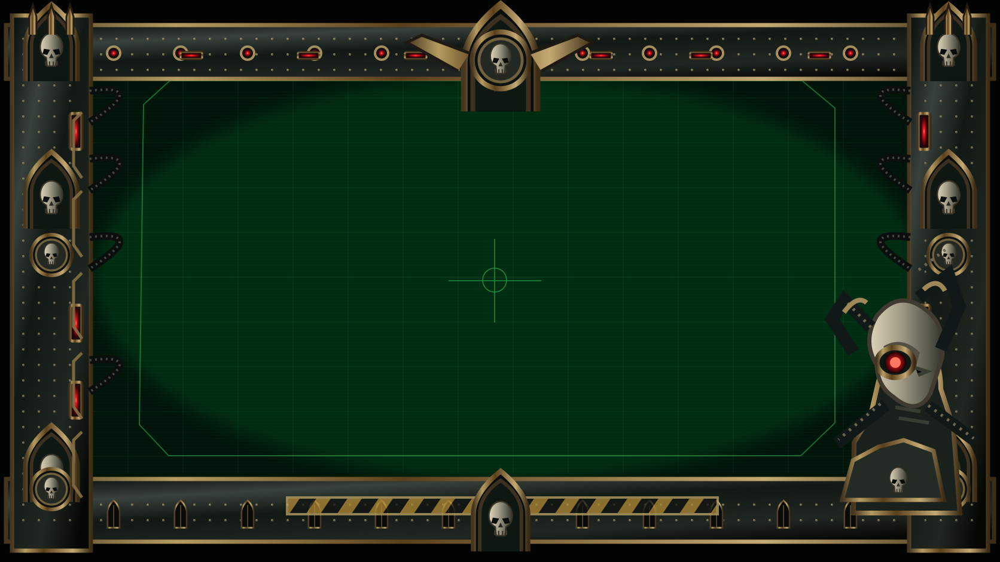
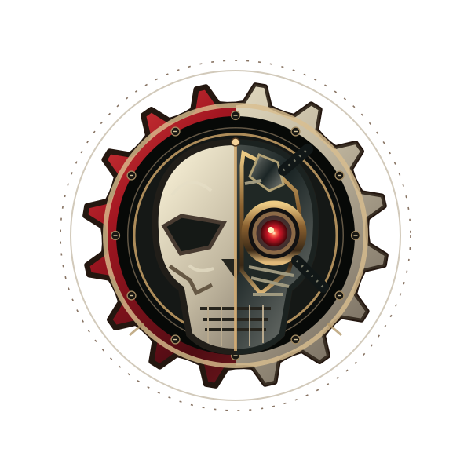

Khatrax Systema — Cartographica Noospherica


O Espírito da Máquina aguarda sua autorização para despertar a Cartographica do Sistema Khatrax.
The Machine Endures Eternal.
Canticle of the Motive Force // Khatrax
01001001 // CHANTING THE RITE OF IGNITION

Rotacione seu dispositivo para contemplar a Cartographica em sua extensão.